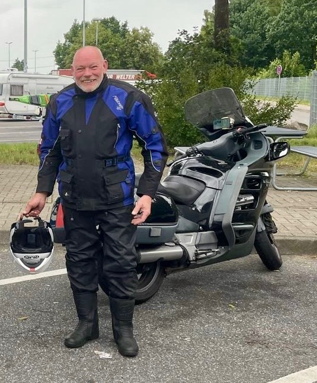
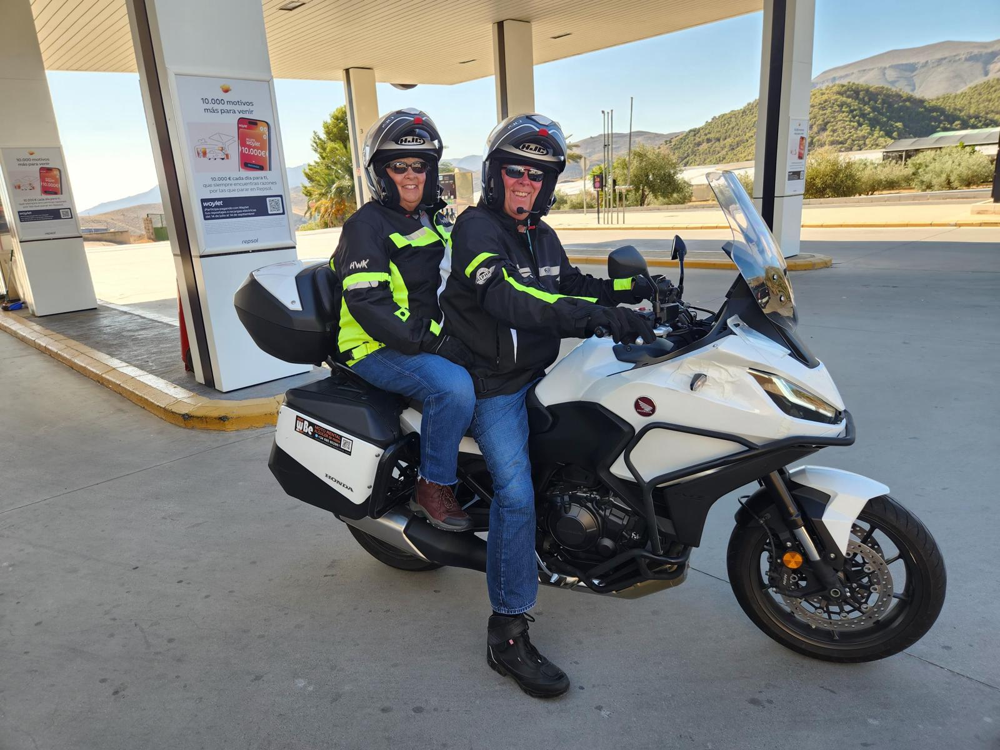
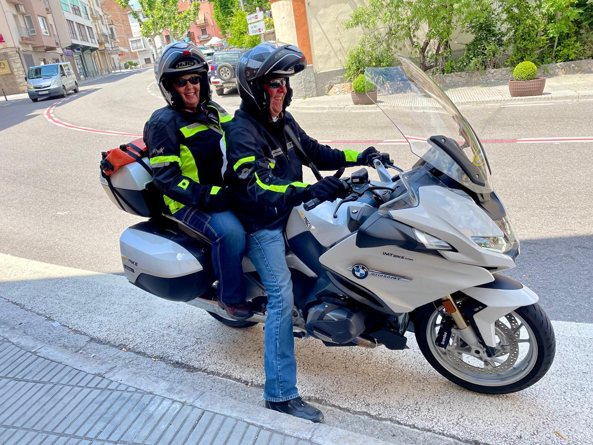

Every rider has a story.
Every adventure deserves to be remembered.
The Retired to Ride Hall of Fame celebrates motorcycle tourers aged 60 and over who continue to explore, inspire and prove that the ride never gets old.
Each award recognises riders whose journeys represent adventure, friendship, courage and the freedom of the open road.

🇮🇪 Cork, Ireland
🏍 1998 Honda Pan European ST1100
🌍 5,998 km European Tour
Read Dave's Story
🇺🇸 Crawfordsville, Indiana, USA
🏍 Honda NT1100 (2024)
🇪🇸 Madrid
🏔 Ronda
⛰ Sierra Nevada

🇺🇸 Crawfordsville, Indiana, USA
🏍 BMW R1250 RT (2023)
🇪🇸 Barcelona
🏔 Spanish Pyrenees
🇦🇩 Andorra
The Retired to Ride Hall of Fame will continue to grow as more incredible motorcycle tourers are recognised.
Every rider has a journey. Every journey has a story.
Do you know a motorcycle tourer aged 60 or over whose journey deserves recognition?
Help us celebrate the riders who continue to explore, inspire and show that adventure has no age limit.
🏆 Nominate A Rider